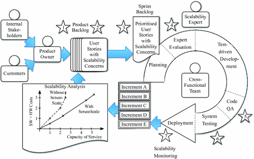

1 Introduction
A scalable system can handle increasing workloads by utilizing more hardware or software resources [4, 6]. A system with poor scalability is unable to extend its capacity if demanded by unexpected workloads. A costly and time-consuming redesign is required. Despite careful planning and design, scalability is still a “fragile” property that can easily be jeopardized by carelessness or problems in inter-connected systems. Hence, scalability is a pervasive property of a system.
Agile methods address a similar challenge. Agile methods target development projects where requirements are not fully known in advance. Using agile methods, software projects deliver parts of the solution with the intention of quickly validating whether the deliverables meet user expectations. Many software organizations are continuously challenged to reduce time to market for new solutions. Agile methods help them to scope delivered solutions so that they can rapidly adjust to unpredictable market needs.
At present, we lack conceptually sound approaches to incorporating scalability engineering into agile software development. Many software organizations are faced with a difficult balancing act when trying to accommodate both. Scalability is a property of a system that accentuates the tensions between planning and agility to a new level. Both scalability and agility seek to accommodate uncertainty. Both scalability and agility are important to meeting the needs for software organizations’ competitiveness. It is therefore imperative that we find solutions to how scalability and agility can be combined.
Babar et al. advocate a middle ground between agile development and incorporating elements of up-front planning [1]. We seek to develop more powerful concepts for dealing with scalability to assist stakeholders and practitioners in their collaboration on scalability engineering. In particular, we think that a more effective language for scalability will assist in enabling collaboration among product owners, architects, developers and testers on the construction of sound scalability requirements. Scalability testing can be put to use in a more agile working practice where it contributes to produce continuous feedback.
We are in the middle of the ScrumScale project that seeks to resolve this challenge. The main objective of the ScrumScale project is to reduce the cost of handling scalability using agile development practices. This cost may be reduced in three ways: (1) Using care when developing software so that costly and time-consuming redesign is reduced. (2) Less gold-plating of subsystems that scale “too well,” to reduce development costs. (3) Reduced consumption of hardware (CPUs, disks, networks) and software resources (with license and cloud service fees) as a result of improved scalability.
The main result of ScrumScale will be an extension of agile techniques to accommodate scalability. We have started with Scrum, but these extensions should also be applicable to other agile techniques. The main contribution of this paper is a Scrum-based process for how to handle scalability in Sect. 2. For scalability testing, we indicate how quality thresholds should be scaled up or down according to the degree of completeness of the product, test hardware, test software, test data and test workload. In Sect. 3, conclusions and further work are outlined.
ScrumScale adopts the action research paradigm where researchers and practitioners seek to solve problems in collaboration using cycles of the steps diagnosis, planning, intervention, evaluation and reflection [5]. In addition to the research partner SINTEF, ScrumScale has the three industrial partners EVRY, Powel and Altinn. EVRY delivers financial services solutions, Powel energy and public software solutions with related services, while Altinn is the largest Norwegian public portal.
We have completed the first pilot phase with one pilot for each industrial partner. These pilots differ both in scope, domain as well as duration. Common to all these three pilots were anticipated scalability challenges. The initial diagnosis before starting these three pilots showed that the root cause of problematic scalability was vague scalability requirements [2]. Clarifying scalability requirements has therefore been the focus in the first pilot phase. Scalability testing has also been done. Monitoring during operations is not handled yet. Apart from participating in the three pilots, we have arranged retrospectives and conducted structured interviews with main stakeholders in all three organizations.
2 The ScrumScale Method
With the ScrumScale Method, we seek to combine scalability concerns with agility, and so we work with scalability earlier in the development cycle than what is normally the case, as illustrated in Fig. 1.

Fig. 1.
ScrumScale vision
The ScrumScale Method has the following seven steps for each new product:
- 1.Scalability triage with a rough, intuitive expert evaluation and feedback
- 2.Extract business-related scalability requirements to get feedback on them
- 3.Derive testable scalability requirements to get feedback on them
- 4.Expert evaluation to get feedback on solution suggestions
- 5.Code review to get feedback on implementation
- 6.Scalability testing to get feedback on solution
- 7.Exploit monitoring data to improve the solution but also to get feedback on the actual workload
In all these steps, we get feedback, so they are applied iteratively and lend themselves to integration in an agile development process, such as Scrum. In fact, this integration is driven by both sides: Modern, agile practice calls for scalability to be handled likewise, but scalability also will benefit from a more light-weight, iterative approach.
The product backlog is set up initially where the product owner in collaboration with customers and other stakeholders defines and prioritizes user stories. Some user stories may be associated with scalability concerns. In between each iteration, the product owner may revisit the product backlog to add or change user stories based on the outcome and new knowledge from the previous sprint. If needed, the product owner should include a scalability expert (champion) to evaluate whether a new or changed story will impact the scalability of the solution. This evaluation may be supported by scalability testing and monitoring of the solution as it is so far. Likewise, a scalability expert may also assist the team that creates code to implement user stories. Sprints are short and time-boxed work periods, typically 2–4 weeks, where scalability is evaluated as part of the sprint review and the planning of the next sprint.
For code review (step 5) and monitoring (step 7) we build on existing practices. The other five steps are described in more detail below.
2.1 Scalability Triage
This is a fast and informal step where scalability experts try to answer the question: Are there scalability risks associated with the product? Work, load, and quality thresholds are not analyzed explicitly. Therefore, this step requires extensive experience. Features dealing with GUI or adding small details to an otherwise large computation will probably not pose a threat to scalability. Only for features where there may be a threat to scalability will we go further in the ScrumScale Method, where we start by working with the scalability requirements. For the remainder of the features, we simply stop here. This is important, since the remainder of the steps, even though they are lightweight, involve some effort.
2.2 Extract Business-Related Requirements
Like other product requirements, scalability requirements originate from business goals: What is the ambition and planned roadmap for the product? The first step in scalability requirements elicitation is therefore, to engage product management and ask questions such as:
- What is the total number of users we want to support?
- What types of users (roles) are there: the public, administrators, specialists, etc.
- What is the total number of objects the system should be able to handle (such as the number of books in an on-line book store)?
- What are good quality metrics? Is a 90-percentile response time metric useful?
- What are expected magnitudes of quality thresholds –0.1 s, 1 s, 10 s, 1 min, 1 h, 1 day, etc.?
- What is the time horizon for the scalability requirements? Is there a planned ramp-up of user load or objects handled? A time horizon larger than five years is probably too much, but shorter than two years probably too small.
Product owners may also have an idea of the expected operating cost of the system in terms of hardware and software license cost per user, per transaction, or similar. If this is clear, it is recorded at this stage, but it cannot be validated until fairly late in the process when resource demands become understood [2].
The requirements gathered at this stage are often imprecise, and not always consistent or even relevant, but they capture the stakeholders’ expectations in a language that they are comfortable with. The next step is to analyze this input and derive precise, useful and testable scalability requirements.
2.3 Derive Testable Scalability Requirements
To derive systematic, testable requirements, we build on the conceptual model in [4] which is used to understand scalability requirements in [3]. The system boundaries define which services are included when measuring quality metrics. An operation defines a unique and relatively similar way of interacting with a service. A quality metric defines how we measure a certain quality and is a key part of an SLA (service-level agreement). At an overall level, response times and throughput are traditional scalability quality metrics, but more details are required. Is it average or 90 percentile response times? Quality thresholds (QTs) describe the border between acceptable and non-acceptable quality for each operation and is connected to a particular quality metric. With the 90-percentile response time quality metric some operations may have a 0.1 s quality thresholds, while the threshold is 10 s for other operations.
Load is how often an operation is invoked. In a closed system, load is specified by the number of users (N) and the think time (Z). Since no users enter or leave the system, the number of users is constant. Think time is the average time to compose operation invocations to the system. For an open system, we use arrival rate (λ), measured in operations per time unit, for example 100 transactions per second. In the context of scalability, we are interested in the highest load, i.e. the load during the busiest hour, week, month, and year in our planning horizon.
Work characterizes the amount of data to be processed, stored or communicated when invoking one operation. Ultimately, work describes the amount of hardware and software resources consumed when invoking one operation. The set of operations is of course an important part of work characterization, but so are also key data objects, like documents and accounts. When considering scalability, we are interested in how the work for one operation varies. This is connected to sizes of objects, e.g. number of documents and the average size of these documents. Such parameters are work parameters. For scalability, we focus on the highest values of the work parameters. Whereas load typically go up and down during the day, week, and month, work parameters typically only increase.
Together, work multiplied by load becomes workload. The highest workload fulfilling quality thresholds is the capacity of a system.
The critical operations are the operations where the product of load and work poses a risk of not fulfilling the quality thresholds. Of course, it would be beneficial to establish the critical operations early, but this set is also a result of the analysis. Therefore, iterations, a strong point in agile methods, are required.
As more knowledge is gained, the granularity may increase or decrease, when operations are split or merged, more work parameters are introduced, or the quality thresholds are defined for each individual operation instead of the same threshold for several operations [2]. The system boundary may also change. However, as we learn more, we see what we can simplify and leave out. This is a typical modeling experience where the granularity (size) of the model increases because of increased understanding before it decreases, when we understand what really matters.
At this step, it is useful to get information on the technical approach: system type (e.g. three-tier web application or batch application) and platform (e.g. cloud).
2.4 Expert Evaluation
The most important outcome of this light-weight expert evaluation is advice on good design decisions and the identification of problem areas when systems are built step by step. This will be part of the planning process and also give input to defining testable scalability requirements, and it will only be performed for high-risk projects. Performance patterns and anti-patterns are explicit and well-documented examples of this knowledge [7], but experts have “silent” knowledge much beyond this. The experts will try to answer the question “Will the product of work and load pose a threat to the quality thresholds?” This can have two outcomes: (1) No risk. (2) Potential risk so that more investigation is required.
Scalability experts (champions) will be a limited resource in all organizations. Therefore, one scalability expert will assist several teams and in this way transfer experience across many different projects and technologies.
2.5 Scalability Testing
During scalability testing, we have partial information across many dimensions:
- Solution: Only some increments are completed.
- Test hardware: May not be as powerful as the production hardware.
- Test software: The versions may not resemble the production environment.
- Test data: Synthetic test data may not represent the details which make scalability hard. Real data may be used, after obfuscation.
- Test workload: It may be hard to anticipate all strange usage patterns for real users.
- Time to do scalability testing: It is clearly a trade-off between how extensive scalability testing can be performed with frequent iterations. A full, frequent scalability test will simply not be feasible. It is an open question how many scalability requirement violations can be detected by a simple automated test.
- Partial competence because of less-than perfect knowledge exchange between scalability tester, architects and developer. To participate in the same Scrum team will of course help. Moreover, selecting optimal configuration parameters for software and hardware is challenging.
As a result, we should also scale the scalability requirements. When only parts of the solution are completed, it cannot consume the complete quality thresholds. We do not use models for unfinished parts of the system, but some kind of implicit modelling is required to scale the requirements up or down, according to the degree of completeness of the other dimensions. We may, for example, assume that the basic platform takes half of the time, whereas each of ten features share the rest. A system with two features should then consume approximately 60% of the resources compared to a complete product. Moreover, if the database server resembles the production environment, while the application servers and the network are weaker compared to the production environment, it becomes harder.
3 Conclusion
Half-way into the ScrumScale project, we see the contours of a profitable fusion of scalability engineering and agile practices. To lay the foundation for such an approach, we have described a series of method steps that can be applied in an iterative manner, allowing an agile approach to scalability engineering.
ScrumScale extends Scrum by connecting functional requirements with scalability requirements to enable evaluation of scalability after each sprint, supported by monitoring and testing. When new sprints are planned detailed design is evaluated with respect to scalability. ScrumScale also adds a new role, the scalability expert, or champion, that supports the team in making the right decisions.
We are developing these artefacts iteratively through trials on real pilots in three partner companies. We will continue with more pilots, making the ScrumScale Method a practical tool for agile scalability engineering.
Acknowledgements
The research leading to these results has received funding from the Norwegian Research Council under grant #256669 (ScrumScale). Tor Erlend Fægri, then in SINTEF Digital, contributed with early ideas for this paper. EVRY, Powel and Altinn contributed with pilots.

Open Access This chapter is licensed under the terms of the Creative Commons Attribution 4.0 International License (http://creativecommons.org/licenses/by/4.0/), which permits use, sharing, adaptation, distribution and reproduction in any medium or format, as long as you give appropriate credit to the original author(s) and the source, provide a link to the Creative Commons license and indicate if changes were made.
The images or other third party material in this book are included in the book's Creative Commons license, unless indicated otherwise in a credit line to the material. If material is not included in the book's Creative Commons license and your intended use is not permitted by statutory regulation or exceeds the permitted use, you will need to obtain permission directly from the copyright holder.
References
1.
Babar, M.A., Brown, A.W., Mistrík, I.: Agile Software Architecture: Aligning Agile Processes and Software Architectures. Newnes, Oxford (2013)
2.
Becker, S., Brataas, G., Lehrig, S.: Engineering Scalable, Elastic, and Cost-Efficient Cloud Computing Applications: The CloudScale Method. Springer, Cham (2017). https://doi.org/10.1007/978-3-319-54286-7Crossref
3.
Brataas, G., Fægri, T.E.: Agile scalability requirements. In: Proceedings of the 8th ACM/SPEC on International Conference on Performance Engineering. ACM (2017)
4.
Brataas, G., Herbst, N., Ivansek, S., Polutnik, J.: Scalability analysis of cloud software services. In: 2017 IEEE International Conference on Autonomic Computing (ICAC). IEEE (2017)
5.
Davison, R.M., Martinsons, M.G., Kock, N.: Principles of canonical action research. Inf. Syst. J. 14(1), 65–86 (2004)Crossref
6.
Herbst, N.R., Kounev, S., Reussner, R.H.: Elasticity in cloud computing: what it is, and what it is not. In: ICAC (2013)
7.
Smith, C.U., Williams, L.G.: Performance Solutions: A Practical Guide to Creating Responsive, Scalable Software. Addison-Wesley, Boston (2001)